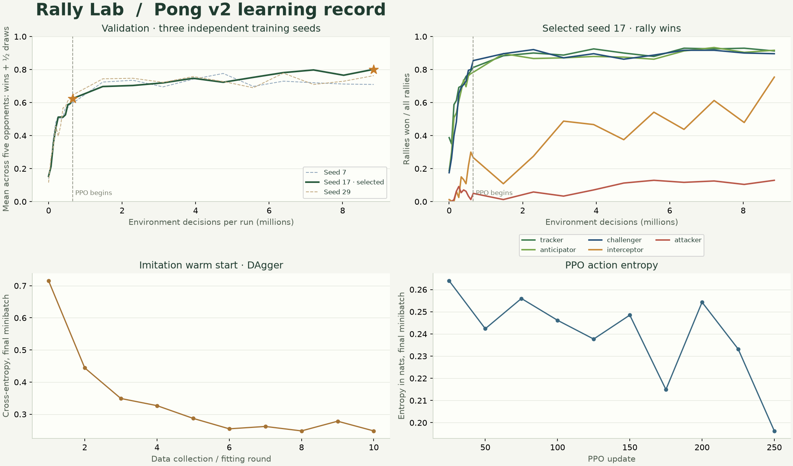

PONG V3 · LONGER RALLIES + EXACT LOOP DETECTION
Time to finish.
Rallies have up to 1,600 ticks to find a winner. Deterministic model matches can finish earlier when an exact repeated state proves a draw. The ball, paddles, serves and six-input model interface keep the same physics as Pong v2.
1,600Maximum action ticks per rally
57.8%Selfplay mirror rallies ending in proven loops
26.54MTraining decisions across three runs
4,803Parameters in each exported actor
What changed in the rules
The 800-tick limit becomes 1,600: 53.3 seconds at the nominal 30 decisions per second. A miss still awards one point, and five rallies determine the match. A point on the final tick takes precedence. A draw awards neither player a point.
After each successful return, model matches compare the exact ball position and velocity plus both paddle positions with earlier return states in that rally. If the state repeats, frozen deterministic policies must repeat their future decisions, so the rally ends as a loop draw. Otherwise, an unresolved rally reaching the limit is a timeout draw. Each new rally and restarted match has a fresh loop history.
Loop exits are disabled when a human plays. They are also disabled during stochastic training: the same physical state need not produce the same next action. The standalone reference makes this distinction explicit. No new policy inputs, acceleration, speed ramp or hidden difficulty state were added.
The preceding matched-serve study found that longer deadlines recover real points in some matchups, while many other draws are exact loops. Pong v3 preserves the v2 contact formula, paddle speed 2 and horizontal return range 5–13.
Three independent learning runs
Seeds 7, 17, 29 each ran 8,847,360 environment decisions. Curves are raw and unsmoothed. Every checkpoint is evaluated on the same fresh 24 validation seeds, all five serves and both sides: 240 rallies per opponent. Selection uses mean (rally wins + half draws) over five reference opponents; it does not use the final test set.

| Training seed | Best PPO update | Validation score | Release |
|---|
| 7 | 225 | 0.783 | Retained for comparison |
| 17 | 100 | 0.791 | Retained for comparison |
| 29 | 100 | 0.811 | Selected |
Selfplay uses seed 29, update 100. Apprentice is that run’s own best imitation warm start. Three runs expose training variation; the selected actor’s test score is not a multi-seed average or an optimal-play claim.
Unseen test serves
The actual exported ONNX actors use deterministic argmax on seeds 2,200,000,000–2,200,000,099, both sides and all five serves. Every row contains 1,000 rallies / 200 five-rally matches under Pong v3. Loop and timeout counts add up to total draws.
Apprentice · imitation
| Opponent | Rally wins | Losses | Loop draws | Timeout draws | Matches W / L / D | Median returns¹ | Mean seconds² |
|---|
| Tracker | 80.7% (807) | 180 | 13 | 0 | 188 / 11 / 1 | 2 | 4.36 |
| Anticipator | 82.1% (821) | 156 | 23 | 0 | 190 / 8 / 2 | 3 | 5.47 |
| Challenger | 83.3% (833) | 160 | 7 | 0 | 198 / 2 / 0 | 2 | 5.24 |
| Interceptor | 32.0% (320) | 257 | 423 | 0 | 88 / 68 / 44 | 6 | 14.56 |
| Attacker | 6.0% (60) | 876 | 64 | 0 | 1 / 197 / 2 | 3 | 5.12 |
Selfplay · PPO
| Opponent | Rally wins | Losses | Loop draws | Timeout draws | Matches W / L / D | Median returns¹ | Mean seconds² |
|---|
| Tracker | 95.1% (951) | 18 | 31 | 0 | 200 / 0 / 0 | 2 | 4.93 |
| Anticipator | 93.7% (937) | 33 | 30 | 0 | 200 / 0 / 0 | 2 | 5.17 |
| Challenger | 93.5% (935) | 23 | 42 | 0 | 200 / 0 / 0 | 2 | 5.22 |
| Interceptor | 44.5% (445) | 30 | 363 | 162 | 178 / 4 / 18 | 13 | 27.79 |
| Attacker | 20.3% (203) | 350 | 447 | 0 | 41 / 114 / 45 | 4 | 7.82 |
¹ Median successful returns in scored rallies only. ² Simulation action ticks / 30, including early loop exits but excluding inference, display pauses and serves. Long rallies and draws are reported separately.
The scripted attacker still wins more rallies than Selfplay. Selfplay wins 20.3%, loses 35.0% and draws 44.7% against it. A draw is not a win.
Did retraining improve the weights?
The original v2 exports were reevaluated under the same v3 rules, on the same fresh test serves as the new actors. This isolates the weights comparison from the longer deadline and early loop exits. The new Selfplay actor changes mean score rate across the five reference opponents by -1.44 percentage points on these test serves.
Against the attacker, rally wins change from 11.1% to 20.3%; against the interceptor, they change from 85.6% to 44.5%. In their direct matchup, new Selfplay wins 193, loses 428 and draws 379 against old Selfplay. Retraining produces a different policy, not a guaranteed improvement across opponents.
Selfplay · old and new weights on Pong v3
| Opponent | v2 weights W / L / D | v3 weights W / L / D | Score-rate change³ |
|---|
| Tracker | 912 / 16 / 72 | 951 / 18 / 31 | +1.85 pp |
| Anticipator | 938 / 30 / 32 | 937 / 33 / 30 | -0.20 pp |
| Challenger | 917 / 34 / 49 | 935 / 23 / 42 | +1.45 pp |
| Interceptor | 856 / 73 / 71 | 445 / 30 / 525 | -18.40 pp |
| Attacker | 111 / 420 / 469 | 203 / 350 / 447 | +8.10 pp |
Apprentice · old and new weights on Pong v3
| Opponent | v2 weights W / L / D | v3 weights W / L / D | Score-rate change³ |
|---|
| Tracker | 843 / 147 / 10 | 807 / 180 / 13 | -3.45 pp |
| Anticipator | 804 / 142 / 54 | 821 / 156 / 23 | +0.15 pp |
| Challenger | 835 / 139 / 26 | 833 / 160 / 7 | -1.15 pp |
| Interceptor | 498 / 190 / 312 | 320 / 257 / 423 | -12.25 pp |
| Attacker | 85 / 726 / 189 | 60 / 876 / 64 | -8.75 pp |
³ Score rate = (wins + ½ draws) / rallies; pp = percentage points. Both models in each comparison face the same reference policies. These selected-checkpoint results are descriptive, not a statistical guarantee of improvement against unseen opponents.
New Selfplay against learned opponents
Selfplay v3 is the first player in every row. The v2 entries use their original frozen weights.
| Opponent | Rally wins | Losses | Loop draws | Timeout draws | Matches W / L / D | Median returns¹ | Mean seconds² |
|---|
| Selfplay | 21.1% (211) | 211 | 578 | 0 | 65 / 65 / 70 | 9 | 16.62 |
| Apprentice | 55.2% (552) | 314 | 134 | 0 | 135 / 43 / 22 | 8 | 12.39 |
| Selfplay-V2 | 19.3% (193) | 428 | 229 | 150 | 27 / 133 / 40 | 9 | 22.09 |
| Apprentice-V2 | 55.0% (550) | 119 | 328 | 3 | 165 / 8 / 27 | 4 | 13.57 |
How the weights were learned
Each run collects 655,360 DAgger decisions over 10 rounds. A predictive attacker labels the learner’s visited states. PPO then adds 8,192,000 decisions (250 updates × 256 environments × 128 steps), facing three original baselines, two scripts and up to five historical actors.
The actor is 6 → 64 → 64 → 3 with Tanh hidden layers, 4,803 parameters and 4,672 MACs per decision. Architecture, reward recipe and training budget remain the same as the previous experiment. PPO uses GAE (γ=.99, λ=.95), clipping .2, four epochs, gradient clipping, decaying learning rate, entropy regularization and a decaying imitation anchor. Rewards are +1 for scoring, −1 for conceding and +.02 per return.
Training uses the 1,600-tick limit without loop termination, because sampled actions, changing weights and opponent changes invalidate a deterministic loop proof. Frozen validation and final evaluation enable loop termination. This changes episode lengths and reward accumulation relative to deterministic evaluation; the config and standalone contract document the distinction. Critics and optimizers are training-only and are absent from ONNX.
Methods: PPO, DAgger, CleanRL implementation notes.
Reproduce and verify
Start with training/README.md. The versioned contract and scalar reference are in training/v3/; v1 and v2 remain archived. Logs, selected checkpoint pairs from all three seeds, configuration, selection records and final results are retained in training/results/v3/.
The export check compares 8,192 observations per actor between PyTorch and native ONNX with identical actions. It also generates 10 complete native-ONNX replays (17,536 frames) for exact TypeScript comparison, including early loop draws. Reproduce with verify_export.py followed by check_replays.ts. Models carry pong-v3 metadata and distinct filenames.
Archived v2 training · Archived v1 training · Timeout and physics study